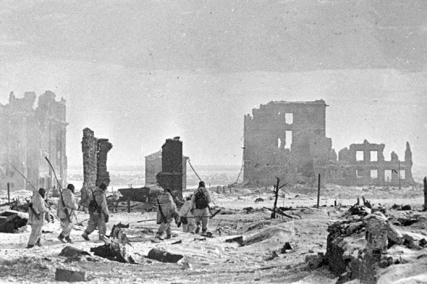
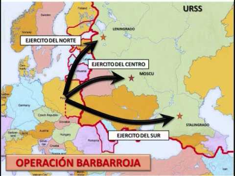
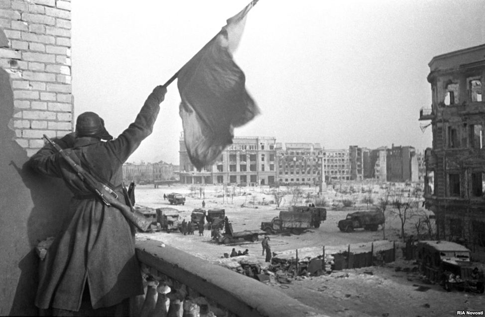
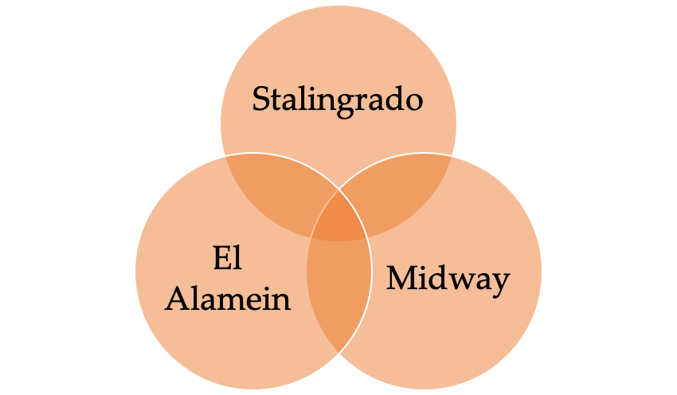
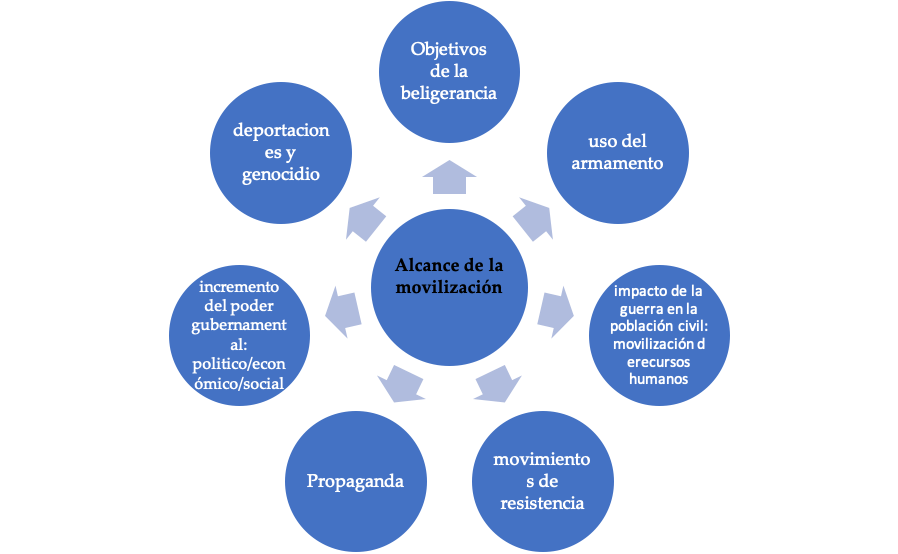
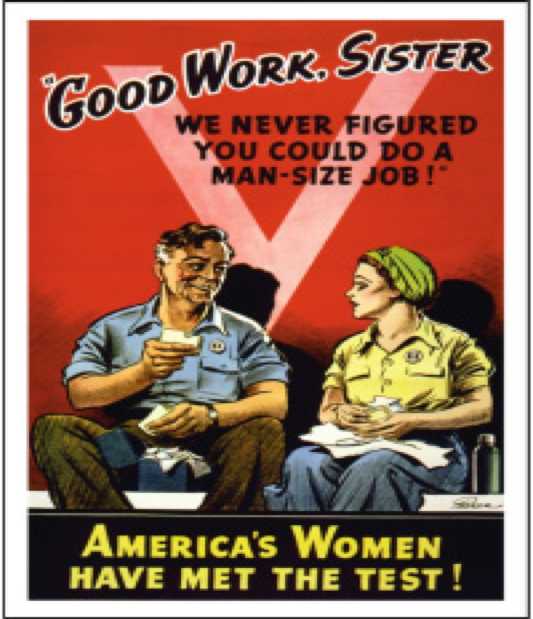

IB Docs (2) Team
IB Docs (2) Team

3. La Segunda Guerra Mundial: estrategias (Enfoques de aprendizaje)

La Segunda Guerra Mundial es un estudio de caso de una guerra interestatal. También es un estudio de caso interregional. Es un ejemplo de una guerra en la que se puede analizar y evaluar la importancia relativa de cada teatro de guerra, tierra, mar y aire, en determinar su resultado. También es una guerra en la que la tecnología tuvo un efecto en la forma en que se libró el conflicto, y en la que varios de los principales estados beligerantes movilizaron de manera total los recursos humanos y económicos.
Preguntas orientadoras:
¿Cómo consiguió la Alemania nazi el control de Europa central, occidental y septentrional hacia finales de 1941?
¿Por qué Hitler tuvo inicialmente tanto éxito con la Operación Barbarroja?
La primera fase de la Segunda Guerra Mundial en África - ¿Por qué tuvo éxito Alemania en sus campañas iniciales en el norte de África?
La primera fase de la Segunda Guerra Mundial en Asia - ¿Qué éxito tuvo Japón en sus campañas iniciales en Asia?
El "año de inflexión" 1942 - ¿Cómo empezaron los Aliados a ganar la Segunda Guerra Mundial a partir de 1942?
¿Cómo derrotaron las potencias aliadas a las potencias del Eje en 1945?
¿Hasta qué punto la tecnología determinó el resultado de la Segunda Guerra Mundial?
¿Cómo afectó el grado de movilización humana al curso y al resultado de la Segunda Guerra Mundial?
¿Cuál fue la importancia relativa de cada teatro de operaciones para determinar el resultado de la Segunda Guerra Mundial?
¿Cómo se vio afectado el papel de la mujer en la sociedad durante el curso de la Segunda Guerra Mundial?
La guerra global comenzó en la región europea después de que Hitler invadiera Polonia el 1 de septiembre y Gran Bretaña y Francia declararan la guerra a la Alemania nazi el 3 de septiembre. Dos guerras regionales se convirtieron en un conflicto global cuando Hitler declaró la guerra a los EE.UU. el 11 de diciembre de 1941. La guerra chino-japonesa había comenzado en 1937. La expansión japonesa en Asia y la respuesta internacional, específicamente el embargo de petróleo de EE.UU. a Japón desde julio de 1941, llevó al ataque japonés a Pearl Harbor en diciembre de 1941.
La Segunda Guerra Mundial fue más mortal que cualquier otra guerra. El número total de personas muertas se estima en más de 50 millones. A diferencia de la Primera Guerra Mundial donde alrededor del 10% de las bajas eran civiles, en la Segunda Guerra Mundial la cifra fue del 50% de los muertos eran civiles. Además, en contraste con la naturaleza de la lucha en el frente occidental en la Primera Guerra Mundial, la Segunda Guerra Mundial fue una guerra de movimientos rápidos, y hubo campañas prolongadas en Europa, África y Asia.
Recuerda que, si se pide comparar y contrastar las prácticas de dos guerras del siglo XX, cada una elegida de una región diferente, podrías utilizar el curso de la Primera Guerra Mundial en Europa y el curso de la Segunda Guerra Mundial en Asia. No se pueden utilizar las prácticas de la Segunda Guerra Mundial en Europa y Asia cuando la pregunta de examen ha pedido que se consideren dos guerras diferentes.
Actividad inicial:
Consulta esta pagina del Museo Imperial de la Guerra en Londres que muestra una variedad de imágenes de la Segunda Guerra Mundial.
Discute lo que las imágenes sugieren acerca de las estrategias de este conflicto, la participación en diferentes teatros de guerra y el uso de la tecnología
1. ¿Cómo consiguió la Alemania nazi el control de Europa central, occidental y septentrional hacia finales de 1941?
Actividad inicial
Consulta este mapa interactivo que muestra la primera fase de la guerra
(Puedes también encontrar mapas de todas las fases de la guerra en esta pagina)
Las primeras actividades aquí están diseñadas para brindar una visión general de la primera etapa de la guerra en los diferentes teatros
Tarea Uno
Enfoques de aprendizaje: Habilidades de pensamiento y comunicación
De a dos, lean la línea de tiempo de los eventos y hagan su propia copia. Elaboren una línea de tiempo "anotada" añadiendo información a los puntos de abajo. (hagan clic en el ojo para obtener información adicional para cada punto)
Necesitan verificar vuestra línea de tiempo para asegurarse de que la información correcta coincide con las fechas y eventos relevantes. Esta tarea también se encuentra en un PDF a continuación.
9 de abril de 1940 La Alemania nazi invade Dinamarca y Noruega
10 de mayo de 1940 Se establece un gobierno de coalición en tiempo de guerra bajo el Primer Ministro Winston Churchill
La Alemania nazi invade Bélgica, Luxemburgo y los Países Bajos
12 de mayo de 1940 La Alemania nazi invade Francia
26 de mayo de 1940 Evacuación de las tropas aliadas de Dunkerque.
10 de junio de 1940 Noruega se rinde a la Alemania nazi.
14 de junio de 1940 París cae ante la Alemania nazi.
21 de junio de 1940 Francia firma los términos del armisticio con la Alemania nazi.
1 de julio de 1940 Los submarinos alemanes atacan a los barcos mercantes en el Atlántico
10 de julio de 1940 Comienza la batalla de Gran Bretaña y continúa hasta el 31 de octubre
23 de julio de 1940 La URSS establece el control sobre Letonia, Lituania y Estonia
7 de septiembre de 1940 Comienza el "Blitz" de Gran Bretaña
27 de septiembre de 1940 Se firma el Pacto Tripartito entre las potencias del Eje [Alemania, Italia y Japón]
29 Oct 1940 Italia invade Grecia
- Winston Churchill dio un discurso al parlamento británico el 18 de junio de 1940: "Toda la furia y el poderío del enemigo se volverá muy pronto contra nosotros. Hitler sabe que tendrá que quebrantarnos en esta isla o perder la guerra. Si podemos hacerle frente, toda Europa puede ser libre... Por lo tanto, preparémonos... si el Imperio Británico y su Mancomunidad durara mil años, los hombres seguirán diciendo "Esta fue su hora más gloriosa".
- La Unión Soviética invadió Finlandia el 30 de noviembre de 1939. La resistencia de Finlandia llevó a los soviéticos a firmar un tratado de paz en marzo de 1940. La debilidad del Ejército Rojo había quedado al descubierto, y esto se debió en parte a las profundas purgas del ejército soviético llevadas a cabo por Stalin entre 1937 y 1941.
- Las fuerzas francesas se concentraron en la Línea Maginot.
- El Primer Ministro británico Neville Chamberlain renunció y Winston Churchill, contrario a la política de apaciguamiento, asumió el liderazgo del gobierno
- Noruega era importante para la Alemania Nazi ya que le daría acceso a materiales de guerra suecos como el mineral de hierro. Noruega también tenía petróleo.
- Una tripulación de la Luftwaffe se desorientó durante un vuelo nocturno y arrojó su carga de bombas sobre Londres. Como represalia, Churchill ordenó el bombardeo de Berlín.
- La línea defensiva de Maginot no se extendió a Bélgica ya que el mariscal francés Petain creía que el bosque de las Ardenas sería en sí mismo una defensa suficientemente fuerte.
- El gobierno británico intentó utilizar Dunkerque para mejorar la moral. Al hablar sobre el "espíritu de Dunkerque" se destacaba la valentía de los involucrados en la evacuación. Sin embargo, no sólo hubo muchas bajas, sino también importantes pérdidas en términos de armas y municiones.
- Los alemanes invadieron Francia evitando las defensas Maginot y pasando por Bélgica y el bosque de las Ardenas
- La Unión Soviética ocupó de Estonia, Letonia y Lituania en junio de 1940
- Toda Francia fue ocupada y desmilitarizada después del acuerdo de alto el fuego, excepto por el sureste.
- La Alemania nazi obtuvo acceso a bases de submarinos en la costa atlántica.
- El historiador Richard Overy argumenta: "Los dos estados occidentales [Gran Bretaña y Francia] perdieron de vista en la década de 1930 el elemento más básico de la guerra - la capacidad de luchar eficazmente en el campo de batalla mismo. Ambos bandos poseían recursos comparables, pero los líderes militares alemanes se destacaban por los altos estándares de entrenamiento y preparación operacional y por la eficiencia técnica".
- Hitler esperaba asegurarse un acuerdo de paz con Gran Bretaña, sin embargo, Churchill se negó a negociar.
- El líder fascista italiano Benito Mussolini declara la guerra a los aliados tras la caída de París. Él confía en que la guerra en Europa terminará pronto.
- Hitler logró más en dos meses de lo que el Káiser había logrado durante toda la Primera Guerra Mundial.
- La batalla por Gran Bretaña comenzó con una ofensiva concentrada contra las bases aéreas de la RAF, pistas de aterrizaje, líneas de apoyo y fábricas de aviones. La campaña provocó un gran número de bajas para los pilotos de ambos bandos.
- Los fracasos de Mussolini significaron que Hitler tuvo que desplegar tropas en los Balcanes.
- Para reducir las bajas, Hitler cambió a incursiones nocturnas contra bases de la RAF
- La Luftwaffe superó a la RAF, sin embargo, sus bombarderos eran vulnerables ya que los cazas de corto alcance debían regresar a la base.
- Los bombarderos de la Luftwaffe tenían un corto alcance y una carga de bombas limitada.
- El Messerschmitt Bf 109 era un avión eficaz, pero sólo podía permanecer en el espacio aéreo británico durante 10 a 20 minutos antes de tener que regresar para recargar combustible. Los Spitfires y Hurricanes británicos tenían la ventaja estar volando sobre suelo propio. También podían permanecer en el aire más tiempo.
- Gran Bretaña se benefició de la nueva tecnología de radar. Goering inicialmente había bombardeado las instalaciones de radares británicas, desactivando temporalmente el sitio en la Isla de White. Sin embargo, los alemanes subestimaron la importancia de esta tecnología y no continuaron atacando sistemáticamente las bases de radares.
- El radar ayudó a minimizar la inferioridad numérica de los británicos. El radar significaba que los británicos no tenían que destinar tripulaciones aéreas para patrullas a la búsqueda de aviones alemanes. También significó que la RAF era advertida de cuándo y dónde los escuadrones alemanes estaban atacando dentro de un rango de alrededor de 120 kilómetros.
- En abril de 1941 las tropas de Hitler invadieron Yugoslavia y Grecia. En tres semanas los griegos se habían rendido. En mayo de 1941 las fuerzas británicas fueron evacuadas de Creta cuando ésta cayó ante Alemania después de un ataque aéreo continuado.
- El "Blitz" duró desde septiembre de 1940 hasta mayo de 1941. 43.000 civiles británicos murieron en el Blitz durante la campaña de bombardeo de 8 meses.
- Un error estratégico de Hitler también fue importante en el fracaso de Alemania para obligar a Gran Bretaña a capitular. Hitler cambió a bombardear ciudades en lugar de concentrarse en destruir aeropuertos. Este cambio a bombardeo de ciudades le dio tiempo a la RAF para reparar pistas de aterrizaje y aviones, entrenar a nuevos pilotos y reemplazar los aviones perdidos.
- El bombardeo de las ciudades británicas no provocó un colapso del espíritu de los ciudadanos británicos.
- Hitler perdió interés en la campaña y postergó la invasión de Gran Bretaña indefinidamente. Quería volver a centrarse en su principal objetivo ideológico, económico y territorial: la URSS comunista.
- La Alemania nazi tenía el control del oeste, centro y norte de Europa. Gran Bretaña "estaba sola".
- Los británicos hundieron la mitad de la flota italiana en Taranto y ocuparon Creta.
- A los seis días de la ofensiva en Francia, Alemania había empujado a las fuerzas aliadas al canal inglés en Dunquerque. Más de 300.000 tropas aliadas fueron evacuadas, así como personal herido y refugiados que huían.
- Hitler no podía utilizar el Blitzkreig para derrotar a Gran Bretaña, como lo había hecho tan eficazmente en toda Europa occidental y septentrional, por ser una isla. Por lo tanto, tuvo que planear un desembarco anfibio de las fuerzas terrestres. Para derrotar a Gran Bretaña se desarrolló la "Operación León Marino". En la primera fase, la fuerza aérea alemana, la Luftwaffe, debía eliminar a la RAF británica para ganar la superioridad aérea, ya que no tenía control total del aire . De lograrlo, Alemania podría cubrir el desembarco de sus fuerzas terrestres.
- La ofensiva italiana desde Albania a Grecia en octubre de 1940 fracasó. Los griegos obligaron a los italianos a retroceder e invadieron Albania
Tarea dos
Enfoques de aprendizaje: Habilidades de pensamiento
Vea el siguiente video animado sobre la Batalla de Gran Bretana
Toma notas sobre:
- Los objetivos de Hitler con respecto a Gran Bretaña y cómo cambiaron
- La tecnología aérea utilizada por los británicos y los alemanes
- Las razones para atacar las ciudades británicas y el impacto
- El papel de las nuevas tecnologías de guerra, como el radar, para determinar el resultado de la batalla.
- El papel de los errores estratégicos en la batalla para determinar el resultado.
- Por qué fue un punto de inflexión en la guerra
Terea Tres
Enfoques de aprendizaje: Habilidades de pensamiento
El siguiente video explica la derrota de Hitler en la Operación León Marino
- ¿Por qué Hitler puso en marcha la Operación León Marino para tomar Gran Bretaña
- ¿Cuáles eran las ventajas de cada bando al comienzo de la Operación?
- ¿Cuál fue el punto de inflexión de la operación?
- ¿Por qué pudo Gran Bretaña evitar la invasión?
- ¿Por qué Churchill se negó a negociar con Hitler?
2. ¿Por qué Hitler tuvo inicialmente tanto éxito con la Operación Barbarroja?

El 22 de junio de 1941 la Alemania nazi lanzó la Operación Barbarroja, su ofensiva masiva contra la Unión Soviética comunista. Hitler había planeado usar blitzkrieg en un amplio frente contra los soviéticos para lograr sus ambiciones ideológicas, económicas y territoriales en el Este. Aunque Alemania no había logrado sacar a Gran Bretaña de la guerra, Hitler no consideró que esto fuera un requisito previo necesario para la ejecución de Barbarroja. Sin embargo, el ataque se retrasó seis semanas cruciales debido a la necesidad imprevista de ayudar a las fuerzas italianas en Grecia y los Balcanes. Este retraso resultó ser potencialmente crucial.
De hecho, Hitler se sentía frustrado con la "distracción" de Gran Bretaña, ya que había esperado que pidiera negociar la paz. Decidido a perseguir sus objetivos a largo plazo en el Este, abandonó la campaña contra los británicos dejando a Gran Bretaña invicta y a una base para un posible segundo frente (hecho que finalmente ocurrió e 1944).
Tarea tres
Enfoques de aprendizaje: habilidades de pensamiento
En pequeños grupos miren el siguiente documental y toman notas sobre la planificación, los objetivos y las primeras etapas de la Operación Barbarroja.
¿Por qué Hitler tuvo tanto éxito inicial en su invasión a la Unión Soviética?
3. La primera fase de la Segunda Guerra Mundial en África - ¿Por qué tuvo éxito Alemania en sus campañas iniciales en el norte de África?
En pequeños grupos, investiguen la primera fase de la Segunda Guerra Mundial en el Norte de África desde el 10 de junio de 1940 hasta junio de 1942 .
Tendrá que asegurarse de que ha cubierto los siguientes eventos importantes:
Septiembre de 1940
- La invasión italiana de Egipto desde su colonia de Libia
- Los británicos expulsan a los italianos fuera de Egipto
Febrero de 1941
- Alemania envía asistencia a Italia en el norte de África
- El General Erwin Rommel y su Afrika Korps llegaron a Trípoli y expulsaron a los británicos de Libia
Junio de 1941
Las fuerzas británicas se debilitaron por el redespliegue de tropas a Grecia
Las fuerzas de Rommel avanzaron y empujaron a los británicos a El Alamein en Egipto
4. La primera fase de la Segunda Guerra Mundial en Asia - ¿Qué éxito tuvo Japón en sus campañas iniciales en Asia?

Tarea Uno
Enfoques de aprendizaje - Habilidades de pensamiento
De a dos, analicen con ayuda del mapa las conquistas japonesas entre 1941 y 1942.
A mediados de 1942 Japón había capturado con éxito un vasto imperio al que llamaron la esfera de coprosperidad asiática.
También puede ver un mapa interactivo que muestra su exitosa expansión en 1942 aqui
Revisen su material sobre las causas de la Segunda Guerra Mundial en Asia y la escala, naturaleza y compromiso de las fuerzas japonesas en la guerra con China.
Evalúe hasta qué punto Japón había logrado sus objetivos en Asia para junio de 1942.
Tarea Dos
Enfoques de aprendizaje: Habilidades de pensamiento, autogestión y comunicación
En grupos de cuatro escriban un "informe sobre el estado de la guerra" en junio de 1942 para ser presentado a un gobierno neutral.
Un estudiante debe reunir pruebas de los acontecimientos en Europa, otro en África, otro en la URSS y otro en Asia. Cada informe debe incluir un análisis de por qué las potencias del Eje tuvieron éxito en ciertos territorios. También deben detallarse los territorios en los que el Eje ha sido detenido, derrotado o es vulnerable
5. El "año de inflexión" 1942 - ¿Cómo empezaron los Aliados a ganar la Segunda Guerra Mundial a partir de 1942?

El historiador Norman Davies argumenta que: "Stalingrado, en términos psicológicos, fue inmensamente significativo. Demostró por primera vez que la Wehrmacht de Hitler era falible. Demostró que el Ejército Rojo de Stalin no era el gigante caótico con pies de barro que muchos expertos habían predicho. Enviaba escalofríos a través de Berlín, y alegraba los corazones de todos los enemigos de Hitler. No se puede exagerar su impacto en las mentes de los británicos y americanos que en ese momento no tenían ningún soldado luchando en suelo europeo.”
En junio de 1942 hubo tres grandes batallas decisivas en tres regiones diferentes del conflicto. En junio los alemanes adoptaron una nueva iniciativa, una ofensiva para apoderarse de los yacimientos petrolíferos soviéticos en el Cáucaso y aniquilar la ciudad cercana que llevaba el nombre del líder soviético, Stalingrado. Los alemanes fueron detenidos en Stalingrado, arrastrados a una lucha callejera de desgaste y finalmente el 6º ejército fue superado por la URSS, rodeado y vencido.
Tarea Uno
Enfoques de aprendizaje: habilidades de pensamiento
Mira el video: “Cuando Hitler invadió Rusia ”
1. Toma notas sobre el curso de esta batalla.
2. ¿Qué puedes aprender del vídeo sobre las razones del éxito de los soviéticos y el impacto que esta batalla tuvo en Europa?
3. Elabora un mapa mental para mostrar las razones de la derrota nazi en la Unión Soviética.
Haz clic en el ojo de abajo para comprobar que has cubierto todos los puntos.
- El 6º ejército no estaba preparado para luchar una larga campaña y las líneas de suministro se rompieron
- El 6º Ejército no tenía el equipo apropiado para el duro invierno cuando Stalingrado resistió el ataque inicial.
- Hitler tomó el mando de la ofensiva por sí mismo, y esto resultó desastroso para toda la guerra en el Este
- Los alemanes habían perpetrado brutales atrocidades contra los civiles a medida que avanzaba y esto llevó a una determinación mucho más fuerte de resistirles
- Hubo una continua pérdida de aviones y tanques durante la prolongada batalla y no pudieron ser reemplazados.El 8º Ejército se hizo cada vez más dependiente del uso de caballos, para concentrar el equipamiento aéreo y los tanques en ciertas divisiones
- Los soviéticos se sometieron a un intenso programa de reforma y modernización militar.
- Los soviéticos adaptaron y utilizaron los tanques y la artillería de manera efectiva.A medida que la batalla se centró en la lucha callejera, los soviéticos utilizaron francotiradores y trampas para tanques con un efecto devastador.
- La fuerza aérea fue reformada.Los cazabombarderos y los aviones de ataque terrestre se combinaron para realizar asaltos aéreos concentrados.
- Las tropas soviéticas terrestres, blindadas y aéreas también se coordinaron eficientemente usando comunicaciones de radio.El historiador Richard Overy sugiere que "la revolución en las comunicaciones soviéticas fue quizás la reforma más importante...”
- Stalin, a diferencia de Hitler, dio un paso atrás y permitió a sus comandantes altamente calificados y capaces, en particular, Chuikov y Zhukov la libertad de llevar a cabo la guerra
- Los soviéticos también dieron un paso atrás en el control ideológico y político, fomentando el sentido de una "Gran Guerra Patria" que inspiró el nacionalismo y la defensa de la "Madre Patria".
Tarea Dos
Enfoques de aprendizaje: Habilidades de pensamiento
Lee la siguiente transmisión de radio de Stalin que se hizo el 3 de julio de 1941 y discute las siguientes preguntas con un compañero:
- ¿Qué dice esta fuente sobre la naturaleza de la guerra en la Unión Soviética?
- ¿Qué métodos utiliza Stalin para motivar a la población soviética? Comente acerca del lenguaje que se utiliza.
- Con referencia al origen, propósito y contenido, ¿cuáles son el valor y las limitaciones de esta fuente para un historiador que estudia el impacto de la guerra en la Unión Soviética?
Como consecuencia de esta guerra que nos ha sido impuesta, nuestro país se ha enfrentado a muerte a su más amargo y astuto enemigo: el fascismo alemán. Nuestras tropas luchan heroicamente contra un enemigo armado hasta los dientes con tanques y aviones. Junto al Ejército Rojo, todo el pueblo soviético se levanta en defensa de nuestra tierra natal.
El enemigo es cruel e implacable. Está en camino para apoderarse de nuestras tierras regadas por el sudor de nuestras frentes, para apoderarse de nuestro grano y aceite asegurados por el trabajo de nuestras manos. Quiere restablecer el gobierno de los terratenientes, restaurar el zarismo, destruir nuestras culturas nacionales y nuestra existencia nacional y convertirnos en esclavos de los príncipes y barones alemanes. Por lo tanto, la cuestión es de vida o muerte para el Estado Soviético, de vida o muerte para los pueblos de la URSS.
En caso de una retirada forzada de las unidades del Ejército Rojo, todo el material rodante debe ser evacuado, no se debe dejar al enemigo ni una sola máquina, ni un solo vagón de ferrocarril, ni una sola libra de grano o galón de combustible. Los granjeros colectivos deben expulsar todo su ganado y entregar su grano a las autoridades estatales para su transporte a la retaguardia. Todos los bienes valiosos, incluyendo los metales no ferrosos, el grano y el combustible que no puedan ser retirados deben ser destruidos sin excepción. En las zonas ocupadas por el enemigo, deben formarse unidades de guerrilla montadas y de a pie. Deben organizarse grupos de sabotaje para combatir a las unidades enemigas, para volar puentes y carreteras, dañar las líneas telefónicas y telegráficas, incendiar los bosques, los almacenes y los transportes. En las regiones ocupadas las condiciones deben hacerse insoportables para el enemigo y todos sus cómplices. Deben ser perseguidos y aniquilados a cada paso, y todas sus medidas deben ser frustradas.
2. El Alamein
El historiador Richard Holmes argumenta que: "El Alamein es el punto de inflexión en la guerra, demostró que Alemania e Italia podían ser derrotadas, Montgomery usó sus fuerzas de manera efectiva e hizo un éxito rotundo de una campaña fallida.”
Gran Bretaña continuó su compromiso en el norte de África. El mariscal de campo Montgomery finalmente derrotó a las fuerzas de Rommel en octubre-noviembre de 1942 en El Alamein, Egipto. Las fuerzas alemanas se vieron obligadas a retirarse a través de Libia.
- En la batalla final Montgomery demostró ser un estratega y líder militar efectivo.
- Rommel cometió errores estratégicos. Hitler intervino y ordenó a Rommel no retirarse en un punto crucial de la batalla.
- Las fuerzas británicas fueron apoyadas decisivamente por las tropas y equipos de EE.UU. y otros aliados.En términos de tropas sobre en tierra, contaban con superioridad numérica.
- Las líneas de suministro alemanas estaban exigidas
- Las fuerzas británicas contaban con una tecnología superior. Por ejemplo, aunque los británicos tenían menos cantidad de tanques, sus Sherman tenían comunicaciones de radio más efectivas para coordinar el campo de batalla.Aunque los tanques Sherman tenían un blindaje más ligero que su homólogo alemán, eran más confiables.
Tarea Uno
Enfoques de aprendizaje: Habilidades de pensamiento
Mira el video: La Batalla de El Alamein I
Luego, continua con el video: La Batalla de El Alamein II
Elabora apuntes sobre la planificación, el desarrollo y las razones de la victoria aliada en esta batalla.
3. La Batalla de Midway
El historiador John Keegan argumenta eso: "Después de la batalla de Midway... la ventaja que los japoneses habían perdido nunca pudo ser recuperada... Seis portaaviones de flota se unieron a la marina japonesa entre 1942 y 1944, América lanzó catorce, así como nueve portaaviones ligeros y sesenta y seis portaaviones de escolta, creando una flota contra la que Japón no podía luchar. Ahora estaba condenado a la ofensiva.”
Tarea Uno
Enfoques de aprendizaje - Habilidades de pensamiento y comunicación
Mira el video Grandes Batallas De La Historia - Midway
Toma notas sobre el fondo de la Batalla de Midway. Incluye: Los éxitos iniciales japoneses en el Pacífico y las relativas fortalezas y limitaciones de las flotas y tripulaciones navales de EE.UU. y Japón.
Toma nota de lo siguiente: tecnología, liderazgo, inteligencia y estrategia en la determinación del resultado de la Batalla de Midway.
Tarea Dos
Enfoques de aprendizaje: habilidades de pensamiento
De a dos, discutan las razones del éxito de la Batalla de Midway. Hagan clic en el ojo para asegurarse de incluir los siguientes puntos.
- Los EE.UU. tenían una inteligencia muy efectiva y habían decodificado los códigos japoneses.Los EE.UU. sabían tanto el plan japonés para Midway, como cuándo se avecinaba
- Los EE.UU. usaron reconocimiento efectivo para explorar los barcos japoneses antes y durante la batalla
- La tecnología de EE.UU. demostró ser vital. Tenían líneas de comunicación fiables y utilizaba nuevos sistemas de radar
- Los almirantes estadounidenses Nimitz y Spruance tomaron decisiones calculadas y efectivas en puntos cruciales de la batalla
- Los almirantes japoneses, Nagumo y Yamamoto cometieron errores cruciales de cálculo durante la batalla.
- Los japoneses carecían de una inteligencia coherente y un reconocimiento efectivo
- Los japoneses carecían de radares y dependían de aviones de reconocimiento para saber dónde estaban los portaaviones y barcos de EE.UU. durante la batalla.
Tarea Tres
Enfoques de aprendizaje - Habilidades de pensamiento y autogestión
En pequeños grupos discutan las razones de las victorias aliadas en estos tres puntos de inflexión. Comparen y contrasten las razones de la derrota de las potencias del Eje en estas batallas en 1942 completando su propia copia de la tabla de abajo:

6. ¿Cómo derrotaron las potencias aliadas a las potencias del Eje en 1945?
Tarea Uno
Enfoques de aprendizaje: habilidades de investigación y comunicación
En grupos investiguen las últimas campañas de la Segunda Guerra Mundial que llevaron a la victoria aliada. Preparen una breve presentación de sus campañas. Asegúrense de incluir mapas, las razones por las que estas campañas fueron finalmente exitosas y el costo humano y material de cada una de ellas.
- Día D: Los desembarcos en Normandía y el avance de EE.UU. hacia Berlín
- Operación Torch: la ofensiva aliada en Italia
- Impacto de la batalla de Midway en la zona, el bombardeo de Japón y el lanzamiento de la bomba atómica
Tarea Dos
Enfoques de aprendizaje: Habilidades de pensamiento
Mira este documental sobre Hiroshima. Analicen las causas y el impacto de la bomba atómica.
Tarea Tres
Enfoques de aprendizaje - Habilidades de pensamiento
Lee las fuentes a continuación y responde a las preguntas que siguen:
Un extracto del Grupo de Investigación de Bombardeo Estratégico de los Estados Unidos. Julio de 1946.
En opinión del Grupo, ciertamente antes del 31 de diciembre de 1945 y con toda probabilidad antes del 1 de noviembre de 1945, Japón se habría rendido aunque no se hubieran lanzado las bombas atómicas, aunque Rusia no hubiera entrado en la guerra y aunque no se hubiera planeado una invasión...
Un extracto de la autobiografía del Almirante Leahy, Yo estaba allí. 1950.
En mi opinión, el uso de esta cruel arma en Hiroshima y Nagasaki no fue de ninguna ayuda material en nuestra guerra contra Japón. Los japoneses ya estaban derrotados militarmente y estaban listos para rendirse debido al efectivo bloqueo marítimo y al exitoso bombardeo de armas convencionales.
Un extracto del libro del historiador Niall Ferguson, La Guerra del Mundo. 2006.
Parte del atractivo de la bomba atómica era que permitía que un avión... lograra lo que anteriormente se lograba solo con cientos... Desde 1940, los Aliados habían estado aplicando el principio de máximo de bajas enemigas por mínimo de bajas aliadas. La creación de la bomba atómica requirió una revolución en la física. Pero no requería una revolución en la economía política de la guerra total. Más bien fue la culminación lógica de la forma de guerra de los Aliados.
Preguntas:
1. ¿Cuáles son los puntos principales que se hacen en la Fuente A y la Fuente B sobre el uso de la bomba atómica?
2. ¿Qué sugiere el historiador Niall Ferguson sobre la decisión de usar una bomba atómica en agosto de 1945?
3. Con referencia al origen, propósito y contenido, analice el valor y las limitaciones de la Fuente A y la Fuente B para un historiador que estudie los fundamentos del uso de la bomba atómica en Hiroshima.
4. A partir de lo que ha estudiado, ¿qué pruebas hay de que Japón no estaba dispuesto a rendirse incondicionalmente en agosto de 1945?
Tarea Cuatro
Enfoques de aprendizaje: Habilidades de pensamiento y comunicación
En pequeños grupos, discutan cómo los Aliados ganaron las últimas etapas de la Segunda Guerra Mundial en Europa, el norte de África y Asia. A partir de lo que han estudiado hasta ahora, evalúen los siguientes factores para determinar el resultado de la guerra:
- la eficacia de los líderes de la guerra
- éxitos/fracasos de la guerra en tierra
- éxitos/fracasos de la guerra en el mar
- éxitos/fracasos de la guerra en el aire
- incorporación de nueva tecnología
En sus grupos discutan qué otros factores relevantes creen que fueron significativos en la victoria aliada en la Segunda Guerra Mundial. (Por ejemplo, la situación económica de los Aliados y las potencias del Eje.)
7. ¿Cuál fue la importancia relativa de cada teatro de guerra para determinar el resultado de la Segunda Guerra Mundial?
Tarea Uno
Enfoques de aprendizaje: Investigación, autogestión y habilidades de comunicación
Formen grupos de tres. Inicialmente, cada integrante trabajará de forma independiente en uno de los siguientes teatros:
- Guerra en tierra
- Guerra en el mar
- La guerra en el aire
Tendrán que revisar sus notas sobre las prácticas de la Segunda Guerra Mundial y luego investigar más a fondo su teatro de guerra en cada región, y su impacto en el resultado de la guerra. Deberán intentar incluir una historiografía relevante para apoyar la importancia de su teatro en la determinación del resultado de la guerra.
Presente su información al resto de su grupo. Asegúrense de incluir fechas, detalles y evidencia que juzgue el papel de su teatro de guerra en el resultado de la Segunda Guerra Mundial. Discuta en su grupo qué teatro cree que fue el más influyente para determinar el resultado de la guerra en 1945.
Imprima el siguiente PDF para orientar su investigación.
 Actividad: Evaluacion sobre la importancia de cada teatro de guerra en la Segunda Guerra Mundia
Actividad: Evaluacion sobre la importancia de cada teatro de guerra en la Segunda Guerra Mundia
8. ¿En qué medida la tecnología determinó el resultado de la Segunda Guerra Mundial?
Tarea Uno
Enfoques de aprendizaje - Habilidades de autogestión y pensamiento
De a dos, repasen el material que han estudiado, incluyendo su trabajo de grupo en los teatros de guerra. En primer lugar, identifiquen la tecnología utilizada en cada teatro durante la Segunda Guerra Mundial y luego completen la tabla de revisión adjunta.
Es posible que necesiten llevar a cabo alguna investigación adicional sobre las tecnologías específicas desarrolladas y utilizadas en cada teatro de la guerra para completar la evidencia de este cuadro.
Una vez que haya completado su cuadro, planifique el siguiente ensayo:
¿En qué medida la tecnología determinó el resultado de la Segunda Guerra Mundial?
 Cuadro sobre la importancia de la tecnolgia en la Segunda Guerra Mundai
Cuadro sobre la importancia de la tecnolgia en la Segunda Guerra Mundai
9. ¿Cómo afectó el grado de movilización humana al curso y al resultado de la Segunda Guerra Mundial?
Tarea Uno
Enfoques de aprendizaje: habilidades de pensamiento
Accede a los carteles de propaganda incluidos en los siguientes sitios e identifica aquellos que hacen referencia a la movilización humana
https://www.lasegundaguerra.com/viewtopic.php?t=13828
http://https://es.rbth.com/historia/80667-15-carteles-sovieticos-guerra-mundial
En pequeños grupos discutan lo que el mensaje de cada uno sugiere sobre el alcance de la movilización humana durante la Segunda Guerra Mundial.
Tarea Dos
Enfoques de aprendizaje - Habilidades de autogestión
En grupos de cuatro investigarán el alcance de la movilización humana en cuatro países beligerantes durante la Segunda Guerra Mundial: Alemania, Japón, Gran Bretaña y la Unión Soviética. Tendrán que explorar los temas identificados en el mapa mental de abajo:

10. ¿Cómo se vio afectado el papel de la mujer en la sociedad durante el curso de la Segunda Guerra Mundial?

Tarea Uno
Enfoques de aprendizaje - Investigación, autogestión y habilidades de pensamiento
Usando tu investigación sobre el alcance de la movilización, encuentra evidencia de cómo la guerra cambió la posición de las mujeres en la sociedad.
- Utilizando este material como base, elije dos estudios de casos en diferentes regiones, por ejemplo, Gran Bretaña y Japón, o los EE.UU. y la URSS.De a dos, investiguen a fondo el impacto de la Segunda Guerra Mundial en las mujeres de cada sociedad.Podrían usar lo siguiente para guiar la investigación:
- ¿Cuál era la situación política de las mujeres antes de la guerra?
- ¿Cambió la posición política de las mujeres durante el curso de la guerra?
- ¿Qué papel tenían las mujeres en la economía antes de la guerra?
- ¿Cambió el impacto de las mujeres en la economía durante la guerra?
- ¿Hubo algún cambio en la posición social de las mujeres durante la guerra?
 Twitter
Twitter
 Facebook
Facebook
 LinkedIn
LinkedIn